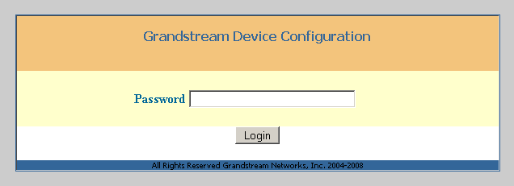
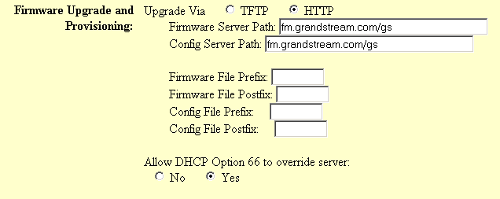
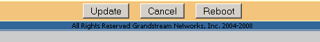
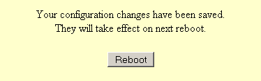

Grandstream-Provisioning (BT- und GXP-Serie)
— Danke an Sebastian Ertz!
Anleitung zum erstmaligen Provisionieren der Grandstream BT- und GXP-Serien in Gemeinschaft
Konfiguration in Gemeinschaft
Einstellung in der Konfig-Datei /etc/gemeinschaft/gemeinschaft.php:$GRANDSTREAM_PROV_ENABLED = true;
Anmeldemaske

Mit dem Passwort admin
einloggen.
Advanced Settings

Upgrade Via
= HTTP
Config Server Path
= {IP-Gemeinschaft}/gemeinschaft/prov/grandstream
Allow DHCP Option 66 to override server
= No
(BT-Serie hat diese Option nicht)
Ganz unten:

auf Update
klicken.
Reboot

auf Reboot
klicken.
Nun holt sich das Grandstream die Einstellungen vom Gemeinschafts-Server. Beim Booten des Grandstream erkennt man dass die Message-LED leuchtet.